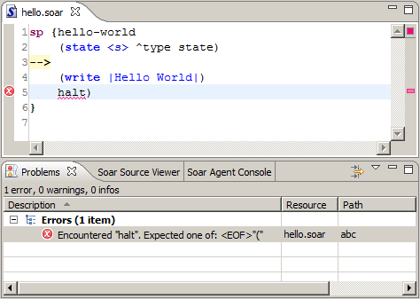
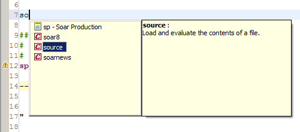
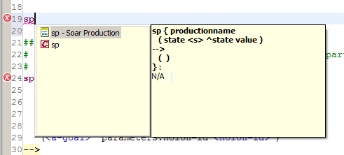
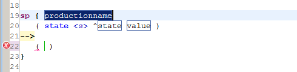
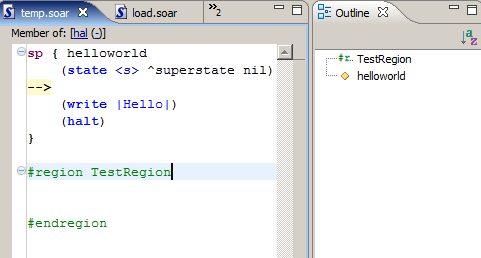
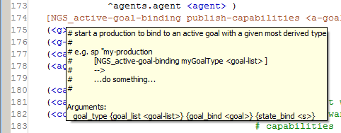
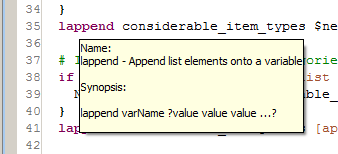
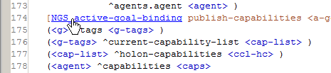

The Soar Editor is a text editor with the Soar-specific features described below.
- Note: This section has a lot of screenshots, so you may want to maximize the Help frame for a better view.
Syntax Highlighting

The editor supports basic syntax highlighting. The functions and commands defined in the Soar8 Manual, as well as variables and comments, are shown with special formatting to indicate that they are keywords or simply to make a block of code stand out.
The colors used for syntax highlighting can be configured on the Syntax Coloring Preferences Page.
Error Marking
The Soar Editor checks the syntax of your Soar code. Errors are marked in typical Eclipse fashion with both an error marker on the line where it occurs, as well as an entry in the Problems View.
Typical Errors include:
- Invalid production syntax
- Disconnected variables
- Duplicate production names
Agent Membership
The editor includes a bar at the top of each file indication which agents the current soar file is a member of.
If the current soar file is not a member of any agents, the option will be given to add it to an existing agent or create a new agent.
If the current soar file is part of an agent, clicking the "(-)" will remove it from the corresponding agent.
Content Assist
The Soar IDE includes many different types of content assist in the editor. Assistance is provided for Soar keywords, datamap attributes, production variables, and Tcl macros.
The content assist is invoked by pressing ctrl-space in various specific contexts. The list will automatically be narrowed as letters are typed.
- After a whitespace character, content assist will display a list of Soar keywords and Tcl procedure names.
- After a ^ content assist will display a list of valid attributes from the datamap.
- After a < content assist will display a list of valid variables.
- After a [ content assist will display a list of valid Tcl macros.
Templates
Eclipse Templates are small snippets of reusable code that can be automatically inserted into the editor. They act like a short form in which you fill with custom text. For more details on Eclipse Templates, refer to the article on Teaching Templates.
To use a Soar Template: - Press ctrl+space just as you would if you were looking for content assistance. The pane to the right displays the text of the currently selected template.
- Press enter to run the selected template. The form elements of the active template are outlined.
- Press the tab key to move between elements.

The templates used by the Soar IDE can be created and configured on the Templates Preferences Page.
Code Folding and Regions
The editor provides functionality for code folding, with both automatic and user defined regions.
Automatically defined foldable regions include both soar productions and tcl procedures.
Users can define foldable regions by surrounding code with #region RegionName and #endregion. The syntax should look familiar as it is the same in Visual Studio.
Notice that the user defined region is also displayed in the outline.
Soar Document Formatting
The editor has a basic integrated code formatter. It can be invoked by highlighting a region of code and pressing ctrl-shift-f or by selecting Format Soar Document through the pop-up menu. The entire file will be formatted if no selection is highlighted.
The code will be formatted according to the values set in the Soar Editor Preferences Page.
Hover Help
The Soar Editor displays hover help for user defined Tcl procedures, built-in Tcl procedures, and Soar commands. To access hover help, hover the cursor over the name of the desired procedure or command.
-

- Hovering over a user defined Tcl procedure displays the comment for that procedure as well as a list of arguments it takes.
- Hovering over a built-in command displays a short description of the command followed by a synopsis of how to use the command.

Hyperlinking
Hyperlinking in the Soar Editor allows you to easily navigate to the definition of a Tcl procedure by ctrl-clicking on its name. When the ctrl button is held down, the text of hyperlinkable items turn blue and become underlined as you mouse over them.
You can also access integrated manpages for built-in Tcl procedures with this method.
Hotkeys
- [ctrl-/] Comments out the selected line.
- [alt-/] Auto-completes the word adjacent to the cursor. Hitting the hotkey multiple times iterates over the list possible auto-completion choices.
- [ctrl-g] Opens any files referencing this one. This is also an option in the popup menu.